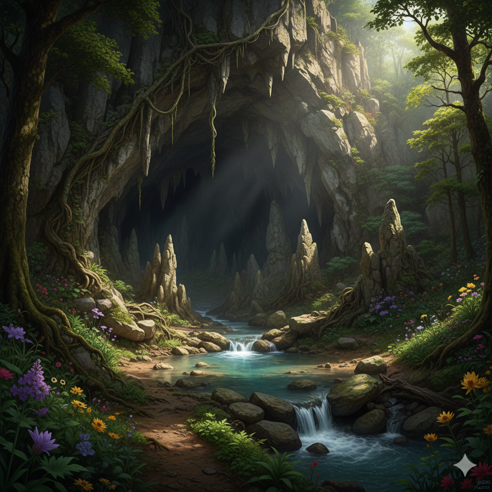
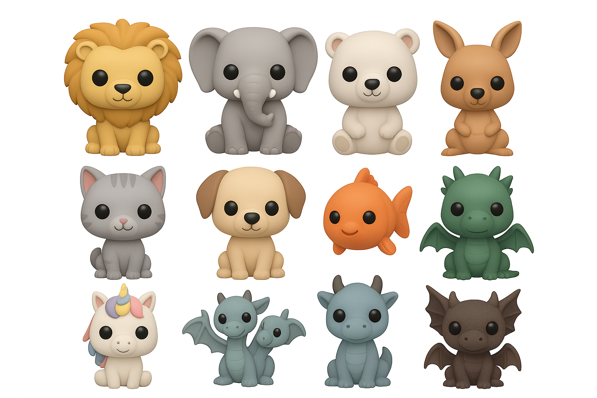
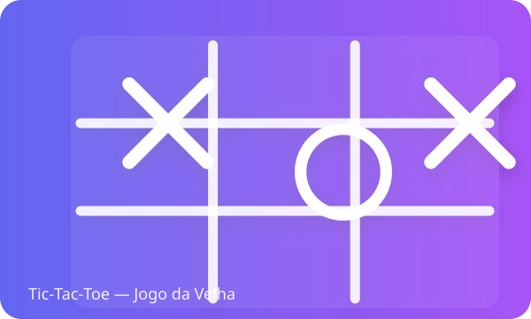

Carnaval de Máscaras
Pequena página interativa com verificação de entrada temática e ilustrações festivas. Modal amigável e validação.

Caverna das Três Escolhas
Mini-aventura interativa com escolhas, imagens e narrativa. Suporta teclado (1-3) e reinício.

Harry Potter — Fan Art
Galeria e landing com ilustrações e ícones do universo de Hogwarts. Inclui imagens, grelha responsiva e navegação simples.
Justify
O Justify moderniza o processo acadêmico no SENAI, substituindo os processos físicos lentos por um fluxo de trabalho (workflow) digitalizado.

Mundo Místico Minis
Estudo de landing page para um estúdio artístico. Focado em design responsivo, animações de scroll e estruturação de portfólio de fan art.
Portal Mágico
Portal temático que aceita palavras mágicas para transportar o visitante a reinos elementais (fogo, água, vento, terra).

Receitas — Bolo
Pequeno site de receitas com passo-a-passo, imagens do processo e layout pensado para leitura clara em dispositivos móveis.

Tic-Tac-Toe
Jogo clássico implementado com HTML, CSS e JavaScript. Inclui lógica de jogador contra jogador e visualização interativa.